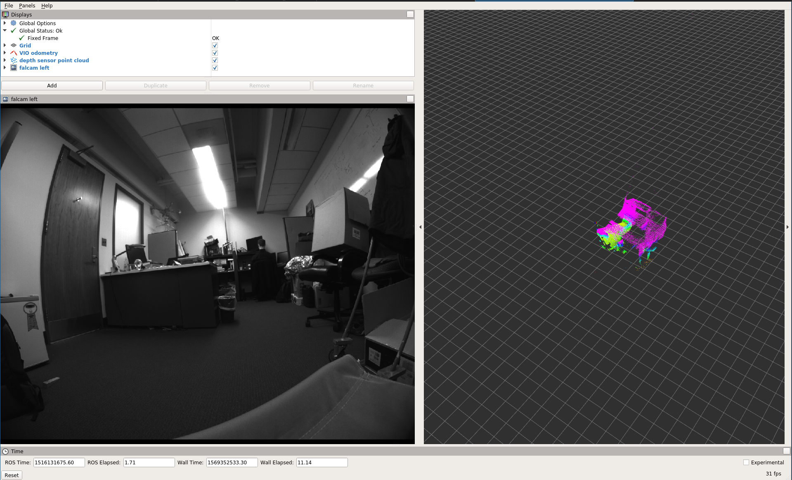
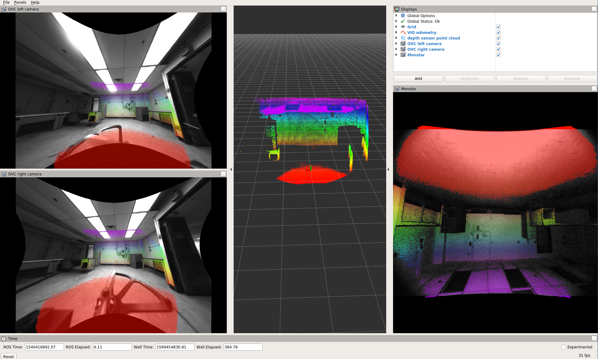

How to use
Installation
Grab the repo from github and clone it into the “src” directory of your ROS/catkin workspace:
cd ~/catkin_ws/src
git clone https://github.com/daniilidis-group/grasp_multicam.git
Build it:
catkin config -DCMAKE_BUILD_TYPE=Release
catkin build
Source it:
source ../devel/setup.bash
Downloading a sequence
Once you find a sequence you are interested in (e.g. 2018-01-16-14-41-13) download it:
seq=2018-01-16-14-41-13
rosrun grasp_multicam download_sequence.bash $seq
Visualizing the point cloud (simple but inaccurate)
Play the bag and the necessary transforms like this:
cd $seq
roslaunch grasp_multicam replay_point_cloud.launch seq:=$seq dir:=`pwd`
In a separate terminal, start rviz:
seq=2018-01-16-14-41-13
cd $seq
rviz -d `pwd`/show_point_cloud.rviz
You should now see something like this:

Visualizing the point cloud (complicated but higher quality)
Running the transform_point_cloud node is necessary to get
more accurate reconstruction. This is for two reasons:
- the processing in the depth sensor driver (the “libroyal” propriertary part) causes a delay of the depth sensor data with respect to the IMU/camera data.
- Rviz seems to use arrival time rather than message time (aka header.stamp) when looking up the transform for rendering point clouds. So if the transform arrives delayed, the rendering will not be accurate.
To get the more accurate rendering, play the point cloud like before, but also run the pointcloud transform
roslaunch grasp_multicam transform_point_cloud.launch
The transformed point cloud is now available, but under a different topic, so you must use a different rviz config file (or change the topic):
seq=2018-01-16-14-41-13
cd $seq
rviz -d `pwd`/show_point_cloud_tf.rviz
Rendering the projected point cloud images in Rviz
For this you need to compile the multicam_calibration ROS package from github, and then undistort the cameras:
seq=2018-01-16-14-41-13
cd $seq
rviz -d `pwd`/show_cameras.rviz &
roslaunch grasp_multicam undistort_all_cams.launch dir:=`pwd`
in another terminal, play the bag:
seq=2018-01-16-14-41-13
cd $seq
rosbag play --clock ${seq}.bag
This should get you an image like this:

The value of this visualization lies in the fact that you can check the camera calibration. At least while the camera is still, the point cloud should coincide with visual features such as wall edges etc.
Recomputing the odometry
To recompute the odometry for a downloaded sequence, first compile the msckf_vio ROS package and make sure it is overlayed onto your ROS workspace.
Now you can run the odometry:
seq=2018-01-16-14-41-13
cd $seq
roslaunch grasp_multicam run_vio.launch dir:=`pwd` seq:=$seq
This should eventually (takes a while to load the bag first!) produce a bag that has the odometry in it.